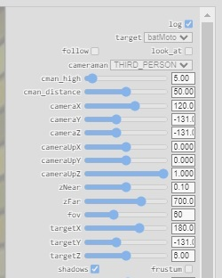

Gotham city is one of the fictional cities of the DC Comics Universe and has always been one of the most wished destinations of the lovers of Batman, the famous super-hero who saved the world lots of times!
The aim of this simple application is to realize the dream of who wishes to visit and explore this city, being in the shoes of the amazing super-hero Batman.
Who does not wish to be Batman driving the BatMoto through the street of Gotham!?
 |
 |
|---|---|
 |
 |
The representation of Gotham has been developed as an
In addition, lots of objects have been added inside the scene:
To conclude this fast overview, the scene has also
 |
 |
|---|
To realize the part of the
The scene is automatically updated each time the user set one of the available option, but this mechanism will be clarified soon.
 |
 |
|---|
The main object of the scene is
Actually, all the original objects that compose Batmain have been bundled into one obj that is atomically used and managed from the application, but in future developments it will be possible to handle them separately: this will let to move the wheel like in real life. In addition, it will be possible and reasonable to develop a mechanism of collisions handling with the other objects of the scene.
The actual version of the application only use a
Then, we have objs
To conclude, in the future it will be appropriated to add the physics of the movements that is currently missed (the object simply move thanks to the interaction with the user, following some trivial events that allows only to move back and forward and to rotate).
Following the normal logic of the application, Batman is the only object that can be moved using the interactions, but it is also possible to move the world (and also other objects that can be added) using the menu, until this functionality remains enabled.
The user can interact with the application both on

 |
 |
|---|
The user can move the motorbike by using the following keys:
Instead, he can also use the mouse:
For the mobile version, the controls are the same of the mouse but with the touch instead of the click. By summarising, the motorbike can be moved:
| Press ↑ | Click and move UP | Touch and move UP | |
|---|---|---|---|
| Press ↓ | Click and move DOWN | Touch and move DOWN | |
| Press ← | Click and move RIGHT | Touch and move RIGHT | |
| Press → | Click and move LEFT | Touch and move LEFT |
In addition to the controls with mouse, keyboard and touchscreen, the application is also provided with a rich
To have the entire vision of the menu, please set the entire screen and use the zoom to make all the options visible.
The scroll bar is currently not working due to the fact that there is a small interference through some mouse events and something that has to be fixed in the css.
|  |
|---|
The menu is composed by multiple parts that offer lots of functionality to the user :
To conclude the user interaction, it's also important to say that the application has been provided with lots of log prints that can be inspected using the developer tools. As already said, the log can be disabled using the proper button on the menu.
We discussed the functionality this application offers to the user, but since this is a course of the degree of Computer Science Engineering, it's also important to give some details about the model and the implementation of the software.
The first important decision that has been taken is to adopt Typescript instead of Javascript.
Typescript is a super-set of Javascript: every program written in Javascript continue to work perfectly also in Typescript. Indeed
So, the reason why it has been used in this application is:
All the code developed in this application can be found at: https://github.com/LM-96/Computer-Graphics-Project-ALLL/tree/main-LucaMarchegiani
Typescript allows the developer to define classes inside .ts files: it is possible to create a new Typescript file with a class and to use it into an another
You can find all the Typescript code organized into classes at https://github.com/LM-96/Computer-Graphics-Project-ALLL/tree/main-LucaMarchegiani/project/src/ts
So, it is possible to define multiple classes inside multiple files, but to use it inside an html page for a web application it is needed to create a
By summarizing, thanks to Typescript, it has been possible to develop the application thinking about entities in the object oriented world that have been bundled into a single .js file that is used from the html main page of the application.
As said, the Typescript code is compiled into Javascript thanks to the compiler: to do this, the compiler must use a configuration file called tsconfig.json with all the options and the settings of the project and the Typescript files to be included.
About the produced bundle, webpack also requires a configuration file that is called webpack.config.js; an important voice of this file is the
Then, in the /project/src/ts it is possible to find all the packages and the classes that have been developed and that are used into the main file LucaMarchegianiApp.ts, that is the entry that will be passed to webpack. In order to compile, it is needed to have node, Typescript and webpack installed, then to open a terminal inside the /project/ directory and run:
npx webpack --config webpack.config.js --mode development
The mode parameter lets to specify the purpose of the produced .js:
You can see the produced bundle for this application in the development mode: bundle.js.
Said that, it is possible to give some details about the development of the application that will be eventually clarified during the oral examination.
The following diagram illustrate the main entities of the application:

setPosition(), setPolarRotation() and setScale(); the class that implements this interface must also store the data about position, rotation and scale of the object.draw() method that will be used to draw and render the object into WebGL.loadObj() and get().setPosition(), setUp(), setTarget(), setFov(), setZNear() or setZFar().hire(), setTarget(), setHigh() and setDistance().setLightPosition(), setLightUp(), setLightTarget(), setLightFov(), setNear(), setFar() or setShadows().MeshObjectManager, one Camera, one CameraManager and one SlManager to realize the draw and the rendering process in WebGL.renderScene().ProgramInfo, the WebGLRenderingContext and the HTMLCanvasElement.
main() that can be overridden with the custom logic of the entire application.
This class works with the @WebGL decorator that will be explained soon and that
These components cooperate between us, with the WebGLApplication that is the main class that is used as the entry-point from the developer.
Thanks to the decorators, the framework behind the application lets the developer define the behaviour of the application using a more
For this reason, it was a good decision to use decorators that allow to use an annotative syntax to define the characteristic that are needed to use the dependency injection .
Looking at the main class of the application at https://github.com/LM-96/Computer-Graphics-Project-ALLL/blob/main-LucaMarchegiani/project/src/ts/LucaMarchegianiApp.ts, it is slightly immediate to understand what this mean and what are the advantages.
Indeed, defined the shader programs into the html and the described functionality the framework should provide, the only think that remains is to define the objects into the scene and the behaviour they might have. Then, to define the main over this framework it is possible to use:
const SHADERS:WebGLShaderReference = {main : ["vertex-shader", "fragment-shader"],color :["color-vertex-shader", "color-fragment-shader"] }@WebGL("app-name", "canvas_id", SHADERS) class MyApplication extendsWebGLApplication {@WebGLMesh("path_to_the_obj") @ObjPosition(170,-131,1) @ObjRotation(degree(10),degree(20),degree(30)) @ObjScale(0.3,0.3,0.3) #myObj:MeshObj @OnCanvasMouseEvent("mousedown") @OnCanvasTouchEvent("touchstart") protected onMouseDown(e: MouseEvent|TouchEvent) { Log.log("WebGLApplication | capturing mouse down [event type: " + e.type + "]") //... }@OnKeyboardEvent("keydown") protected onKeyDown(e: KeyboardEvent) { Log.log("WebGLApplication | capturing key down [event type: " + e.type + ", key: " + e.key + "]") //... }protected main(args: string[]): void { console.log("Hello world! [" + this.applicationName + "]") myObj.setPosition(0, -1, 100) this.getMeshObjectDrawer().getCamera().setPosition(1, 1, 1) this.getMeshObjectDrawer().getSlManager().setLightPosition(90, 500, 10) this.renderScene() } }
We have:
WebGLEnvironment canvas, a MeshObjectDrawer and a MeshObjectManager, allowing the developer to use the main with all of these object that are already injected and ready to use.
MeshObject that will be ready to use at the main() execution time.
The other decorators easily allow the developer to set up an object once it has been loaded, fixing the position, the rotation or the scale.
The full documentation at https://github.com/LM-96/Computer-Graphics-Project-ALLL/blob/main-LucaMarchegiani/project/src/ts/webgl/webgl-application.ts will explain everything.
To conclude, in order to WebGLApplication class, annotating it with the main(). Then this .ts file will be the entry of webpack that will bundle the file with the other dependencies into the final .js.
In order to introduce a remarked level of
The basic idea is:
It is easy to look at the advantages of integrating a system like the one that has been introduced, and the framework for WebGL that has just been described. Suppose to have an object that changes its position for some reasons, and the output of the GUI that has to show its position; or, again, also about the positioning of the camera. Indeed, if an object that has been moved
As anticipated, the framework behind the application has an own event driven infrastructure that is used from the various components.
All the code about the signal framework can be found here: https://github.com/LM-96/Computer-Graphics-Project-ALLL/tree/main-LucaMarchegiani/project/src/ts/signals.
Without going into the details (for now), it is easy to summarize the key point with the integration in the application:
MeshObject instance is automatically attached to signal system and fires a specific eventNow it is possible to link the main implementations of:
MeshObject: https://github.com/LM-96/Computer-Graphics-Project-ALLL/blob/main-LucaMarchegiani/project/src/ts/obj/flowed-mesh-object.ts (Camera: https://github.com/LM-96/Computer-Graphics-Project-ALLL/blob/main-LucaMarchegiani/project/src/ts/camera/flowed-camera.ts (
It is also possible to see the big advantages of this mechanism by looking at the CameraMan class, that uses the events fired by the target to realize the view moving the camera.
Again, a more descriptive way to register to events and to attach listeners is possible thanks to the decorators developed at https://github.com/LM-96/Computer-Graphics-Project-ALLL/blob/main-LucaMarchegiani/project/src/ts/signals/signals-decorator.ts
More details about all will be provided at the oral examination if wished by the teacher.
A really special thanks to my colleagues and friends that collaborate with me during this final project: